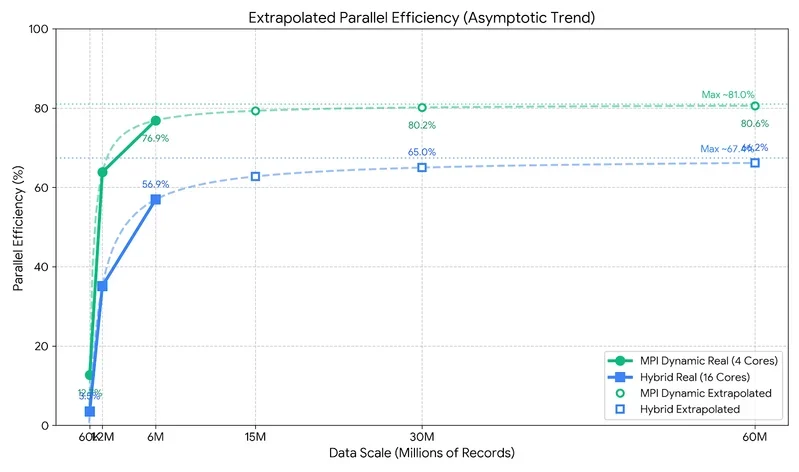

Parallel Computing Project
2024.02 - 2024.06
平行化巨量向量檢索
Massive Vector Retrieval
OpenMP
MPI
Hybrid Architecture
C++
Performance Tuning

Performance Analysis: Up to 36.4x Speedup
展示內容：600 萬筆高維度資料的平行運算加速比分析
混合平行運算架構
結合 OpenMP（共享記憶體）與 MPI（分散式記憶體）的 Hybrid 架構。透過靜態與動態任務排程（Static / Dynamic Scheduling）的深度比較，找出最佳的運算資源配置策略。
巨量維度資料處理
針對 Fashion-MNIST 等高維度（784維）影像特徵，實作從 6 萬筆到最高 600 萬筆資料的極限壓力測試，成功將單機序列運算時間大幅壓縮，達成 36.4 倍以上的加速比。
架構演進與測試流程
單機與共享記憶體
以 C++ 實作循序運算（Serial）作為基準基準點，接著導入 OpenMP 進行多執行緒加速，突破單核運算瓶頸。
分散式 MPI 排程
實作 Master-Worker 架構，深入測試 MPI 的靜態（Static）與動態（Dynamic）任務分配，分析龐大通訊開銷（Comm Time）對整體效能的影響。
混合架構與效能分析
整合 MPI 與 OpenMP（Hybrid 架構），在節點間分配任務並在節點內使用多執行緒，計算出最終的 Efficiency 與 Speedup 成長曲線。